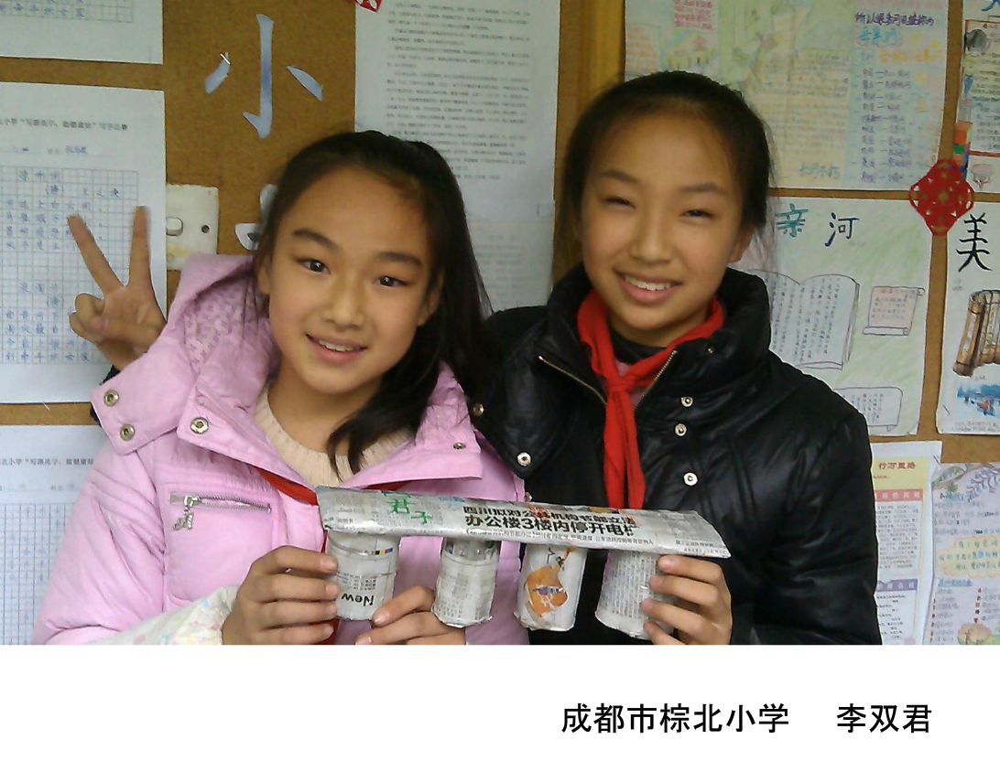
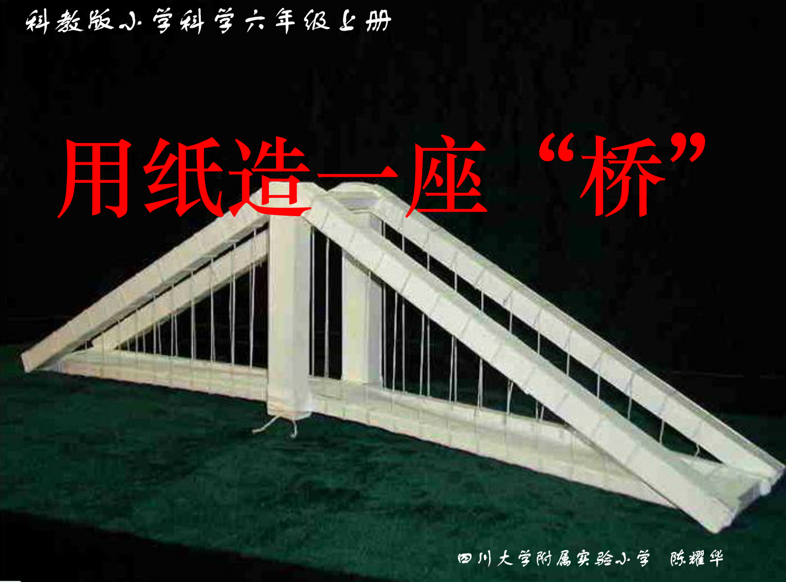

造纸桥 内容 幻灯片 讨论 作业  《造纸桥》 本活动是成都市棕北小学李双君老师及六年级的孩子们一起参与的活动。让孩子们学会分析实际问题,用学到的形状和结构知识来设计桥,用报纸来建造一座纸桥。 此次活动是六年级《科学》上册的实践活动,时间90分钟。孩子们用报纸、胶水等来代替造桥的木板、钢材、水泥等,孩子们体验如何做一位桥梁设计师和工程师  《用纸造一座桥》 造纸桥的要求;造纸桥要考虑的问题;各种各样的纸桥;评价纸桥。